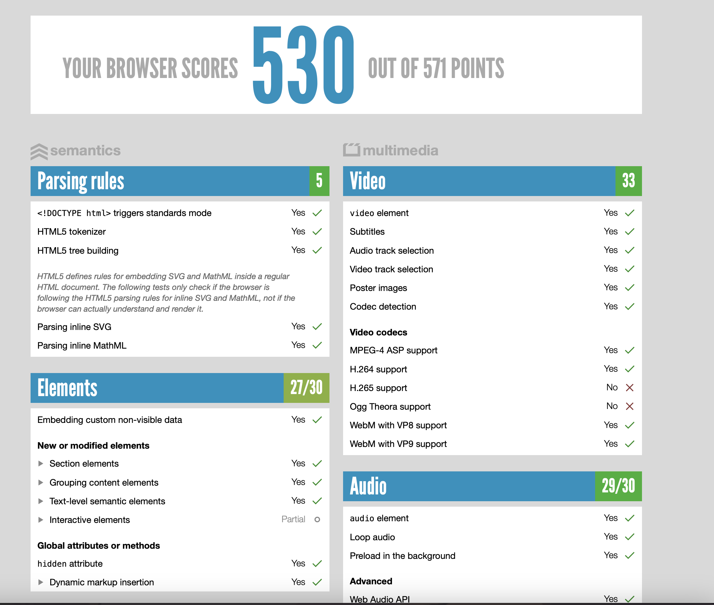
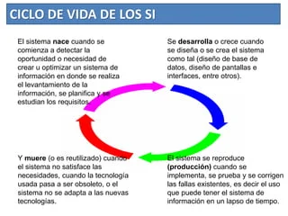

Preguntas
¿Cuál es la diferencia entre Internet y la World Wide Web?
R= El internet es la interconexion de multiples computadoras y servidores a nivel mundial,
mientras que la World wide web es una coleccion de paginas que se acceden desde el internet.
¿Cuáles son las partes de un URL?
R= Una url se compone de los siguientes elementos
- Protocolo: Es el protocolo de comunicacion que se utilizara para la conexion
- Subdominio: Representa el contenido que se debe mostrar, varian el el tipo de pagina que se desee
- Dominio: Es el nombre de la pagina a la que se accede, este puede variar si se compra una palabra como dominio para identificar rapidamente a donde se esta accediendo
- TLD: Es un dominio de nivel superior, representan el tipo de organizacion que se tiene
- Slug: Ayuda a los usuarios a saber en que carpeta se encuentran
- GET: Es una forma en la que el navegador web solicita informacion al servidor sobre la paginga
- HEAD: Recupera la informacion de un recurso especifico sin tener que descargar todo el cuerpo del recurso
- POST: Se utliza para enviar un recurso especifico causando un efecto en el servidor
- PUT: Sirve para crear o actualizar recursos en el servidor
- PATCH: Realiza modificaciones parciales a un recurso
- DELETE: Elimina recursos del servidor
R= Post. Porque post causa un estado de ingreso al servidor para poder mostrar los datos sensibles correspondiente a esa cuenta.
¿Qué método HTTP se utiliza cuando a través de un navegador web se accede a una página a través de un URL?
R= Get. Porque get solicita toda la informacion sobre la pagina web a la que se quiere acceder
Un servidor web devuelve una respuesta HTTP con código 200. ¿Qué significa esto? ¿Ocurrió algún error?
R= El codigo 200 indica que toda la solicitud fue exitosa, se le conoce como el codigo 200 OK.
¿Es responsabilidad del desarrollador corregir un sitio web si un usuario reporta que intentó acceder al sitio y se encontró con un error 404? ¿Por qué?
R= Este error se produce cuando se intenta acceder a una URL que no existe, ya sea porque el link esta caido o se introdujo
¿Es responsabilidad del desarrollador corregir un sitio web si un usuario reporta que intentó acceder al sitio y se encontró con un error 500? ¿Por qué?
R= Puede que si, pues el error puede ser un atrapa todo por lo que el error puede ser con algun problema con el servidor (ya sea por una mala conexion o una caida del mismo)
¿Qué significa que un atributo HTML5 esté depreciado o desaprobado (deprecated)? Menciona algunos elementos de HTML 4 que en HTML5 estén desaprobados.
R= Se refiere a los atributos que ya no son recomendados que se usen, pues ya existen otras formas de ejecutar la misma accion y estas pronto dejaran de recibir soporte. Por ejemplo Font esta desaprobado en HTML4 al igual que en HTML5.
¿Cuáles son las diferencias principales entre HTML 4 y HTML5?
R= HTML5 proporciona mas herramientas para crear cosas multimedia como video, audio y animaciones cosa que en HTML4 habia que hacerlas con herramientas externas, aparte que su sintaxis es mas clara
¿Qué componentes de estructura y estilo tiene una tabla?
R= Una tabla HTML (table) es un conjunto de celdas (td o th) organizadas en filas (tr) que a su vez se pueden organizar en grupos de filas (thead, tbody o tfoot). Además, la tabla puede tener una leyenda (caption) y hacer referencia a las columnas (col y colspan).
¿Cuáles son los principales controles de una forma HTML5?
R= Los controles de forma sirven para generar interacciones con el usuario. Entre ellos esta input, textarea, select, button, datalist, fieldset, entre otros.
¿Qué tanto soporte HTML5 tiene el navegador que utilizas?

¿Cuál es el ciclo de vida de los sistemas de información?
R= Este ciclo describe la existencia de un sistema de infromacion desde que se crea hasta que entra en desuso.

¿Cuál es el ciclo de desarrollo de sistemas de información?
R= Este ciclo describe el desarrollo de un sistema de informacon y sus diferentes etapas

Como ingeniero de software ¿cuál es tu recomendación sobre el uso de !important en un CSS?
R= La verdad es que yo prefiero hacer todo el CSS en un archivo externo, por lo que mi recomendacion es intentar realizar el css en un solo estilo (inline, internal o external) para de este modo minimizar el uso de important pues puede mover cosas que aveces no queremos que lo haga.
Si se pone una imagen de fondo en una página HTML, ¿por qué debe escogerse con cuidado?
R= Yo primero procuraria la calidad de la imagen para que se vea lo mejor posible, a su vez que tambien es importante revisar su copyright en caso de ser una imagen de internet y por ultimo analizaria la composicion de la pagina para saber que no esta de mas o no combina.
Como ingeniero de software, ¿cuál es tu recomendación al elegir las unidades de un propiedad de estilo entre %, px y pt?
R= La verdad yo prefiero para el texto en px porque es más facil modular el cambio con más precision y con % cualquier otra modificacion de medida, aunque tambien se podria ocupar rem para que sea escalable al navegador.
¿Por qué el uso de una versión minimizada del CSS mejora el rendimiento del sitio?
R= Pues se sabe que mientras menor y simples sean las instrucciones mayor eficiencia tendra el codigo, es por eso que una version minimizada ayudaria a que fuera más fluido.